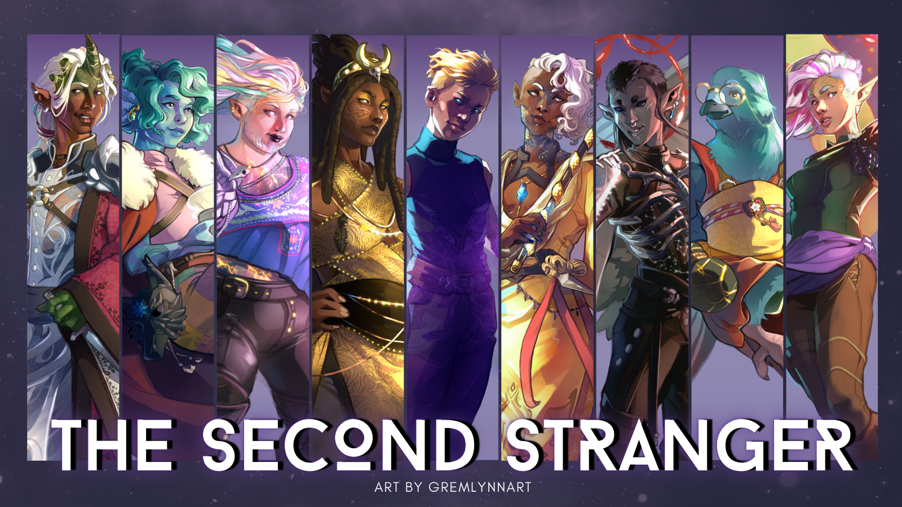
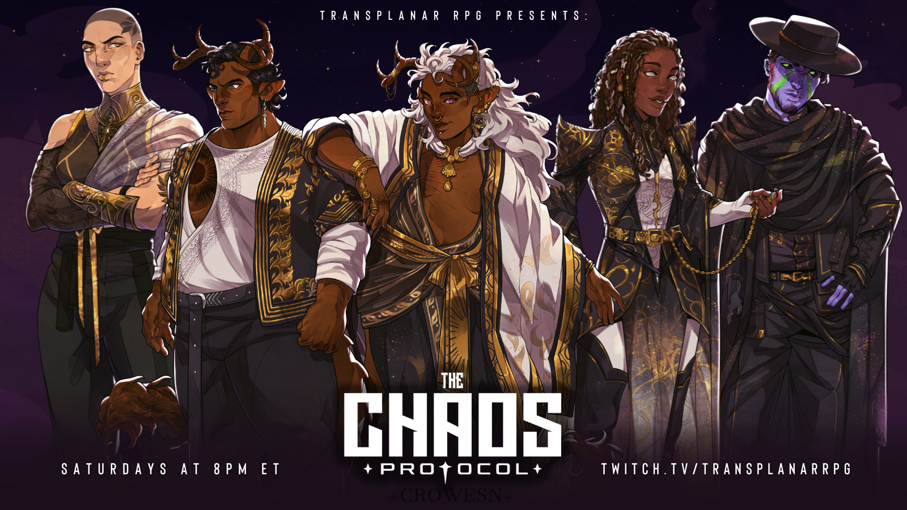

Transplanar RPG is a dark fantasy actual play TTRPG podcast and live show. The stories all take place in a noncolonial, antiorientalist multiverse.
The casts and crew are people of color and trans led, and the stories center on themes of queer/trans love, as well as grief, religion, monstrosity, and fate.
There are 2 main campaigns, the second stranger and the chaos protocol, as well as two limited series of an original, 2-player TTRPG designed by Connie, godkiller.
I first learned about this show through one of Connie's tiktoks. At the time I'd never played or watched D&D, and i'm so grateful to have been introduced through this show. I'd never felt like there was a place for me in TTRPG spaces, and this show proved how wrong I was. It has had a huge impact on me creatively, and has showed me ways to love myself and my friends/community more fully.
I love this show so freaking much and I want to talk about it all the time to everyone so I figured I'd make a page here for it here!
The Second Stranger
The Second Stranger was an 8 arc campaign that introduced the Transplanar Multiverse. The campaign begins at the end of the world, the Cataclysm. The stars are ripped from the sky and the gods are nowhere to be found. Four Paragons, joined by four Keepers, rise as divine heroes to save the realm - "everyday heroes who forge their own fates"
Cast
art by Lynn


fave characters
Dewey Quirk has a very special place in my heart! He is an aarakokra artificer who starts of timid and hesitant and his journey was so relatable and heartwearming to watch.
I also loved Abiku, played by Austin Taylor (who is possibly the funniest person ever). They are a goliath who is revived from a long sleepTM and has an interesting journey as they learn about what happened in the many years before their return.
Gentle was anoter favorite, I loved how they always had the right tea for someone when they needed it. They were so soft and caring, and watching them learn to extend that same care to themselves was really powerful!
The Chaos Protocol
the chaos protocol follows Strike Team Nova, TRANS (Transplanar Reification and Nourishment Syndicate) Agents who travel across the multiverse executing the will of Fate...mostly...
This is one of the most beautifully expansive stories about found family, grief, and remembering. Each arc uses a different game system as the agents travel to different worlds.
strike team nova
summary // thoughts
arc 1
game system: wildsea
"In Arc 1, Strike Team Nova embarks on their first ever Mayday Mission to a verdant world full of swashbuckling wildsailors."
// after listening to 8 arcs of the second stranger, chaos protocol felt both pared down and infinitley huge at the same time. it took me some time to adjust to a just 3 PCs (where TSS had 8 by the end) but I fell in love with all the characters quickly. i really enjoyed the wildsea system as well, it was cool to see a different game, and it suited the world so well.
arc 2
game system: city of mist
"In Arc 2, Strike Team Nova goes to the mist-swaddled City of Heaven, a divine plane of gods nestled within the xianxia-inspired Sister Realms."
// i had just finished watching Heaven Official's Blessing when this arc started, so the xianxia vibes were so perfect. wow this arc really gets into the heaviness of grief, and how that looks so different for everyone. a really powerful arc -- and erika ishii's feature episode was amazing! i have to watch her in some other APs sometime
arc 3 (ongoing)
game system: vampire hack of court of blades
"In Arc 3, the team heads to the urban fantasy sprawl of Inferno, a supernatural city of vampires, werewolves, and feuding noble Houses."
// once again, just as i'm going through my vampire phase - this arc dropps. i am obsessed with the world, the music, the characters. its so cool to be in an urban fantasy setting. the most recent episode was HEARTBREAKING i was sobbing by the end. so good, can't wait to see where the last few episodes go.